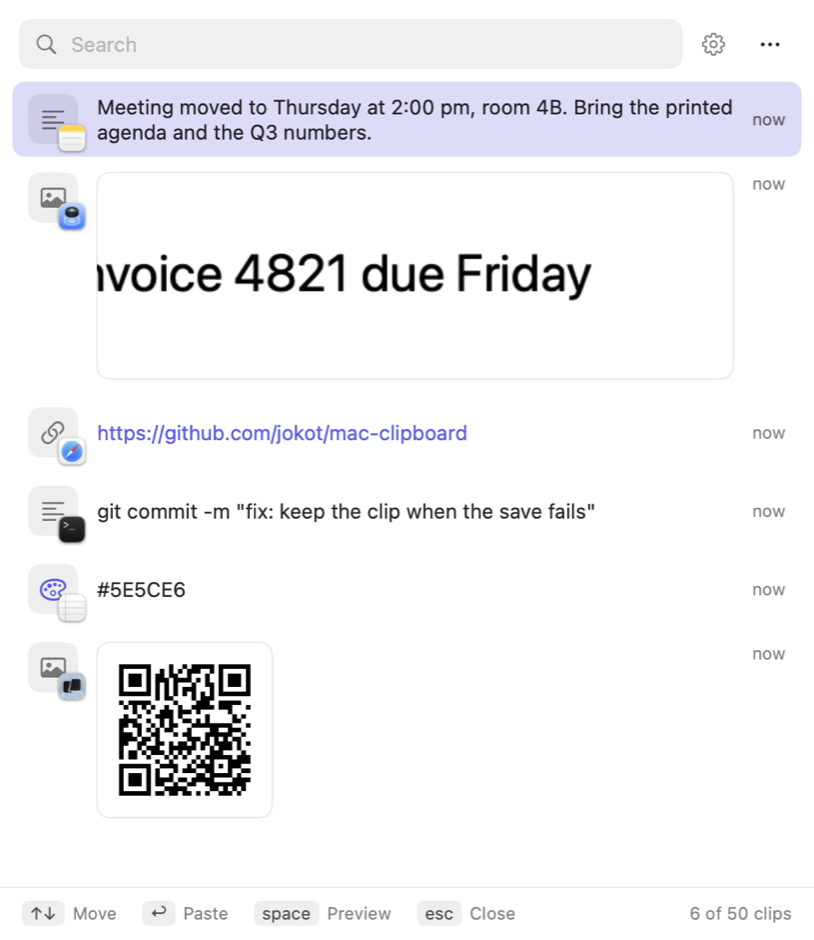
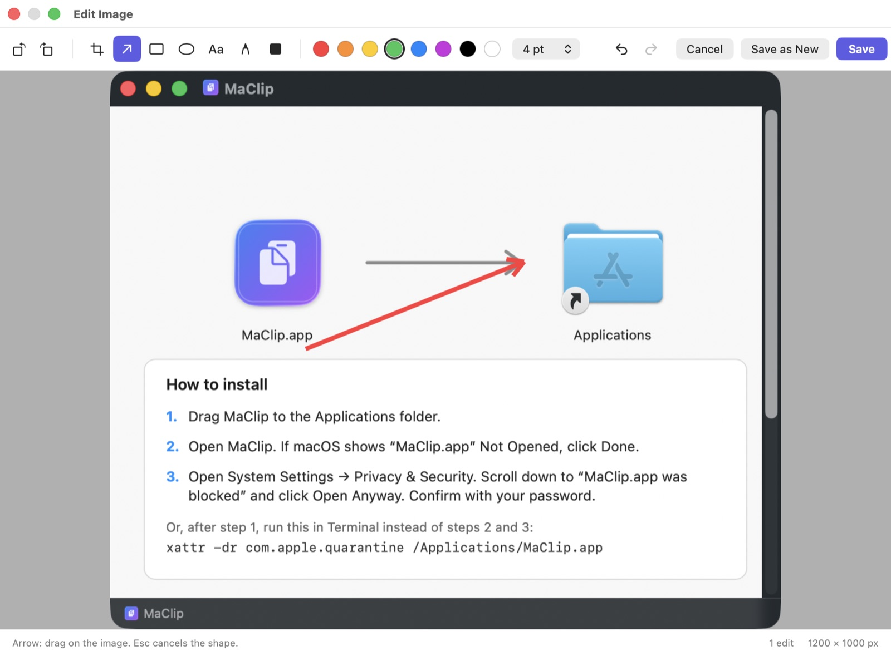
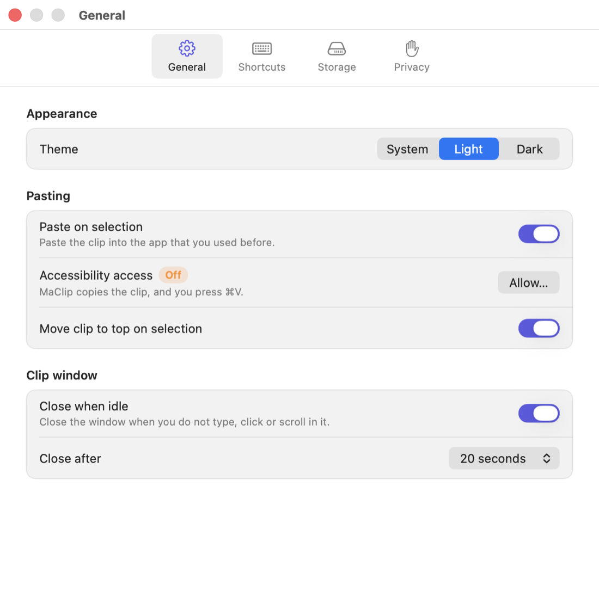

Text, links, images and files
Each clip shows what it is: the text, the real image, or the file name. A small icon tells which app you copied it from.
MaClip keeps what you copy: text, links, images and files. Press ⌃⌘V in any app, pick a clip, and MaClip pastes it.
Free and open source (MIT) · macOS 12 or later · Apple silicon and Intel

Features
Each clip shows what it is: the text, the real image, or the file name. A small icon tells which app you copied it from.
Type to search. Filter by app with from:Safari, or by kind with tag:code.
Press space to read a long clip in full, or to see an image at its full size.
Fix a text, a link or a file path before you paste it. The clip keeps its place in the list.
Copy the text or the QR code in an image clip, with one click or one shortcut.
Every action has a key, in every window. Press ⌘/ to see the keys of a window.
Screenshot to text
Take a screenshot with ⌃⇧⌘4. Then, in any app, press a shortcut. MaClip reads the newest image clip and pastes the result. MaClip does not open.
⌘V still pastes the image. Text recognition runs on your Mac with the macOS Vision framework.
Image editor
Crop, rotate, and add arrows, boxes, ovals, text and pen lines. Redact private text with a black box. Save over the clip, or save a new one.

Privacy

Install
Apple has not notarized MaClip, so macOS asks you to allow it one time. These steps are also in the DMG window.
Or, after step 1, run this command in Terminal instead of steps 2 and 3:
xattr -dr com.apple.quarantine /Applications/MaClip.appMaClip asks for Accessibility access the first time it pastes for you. It uses the access only to press ⌘V in the app that you used before.